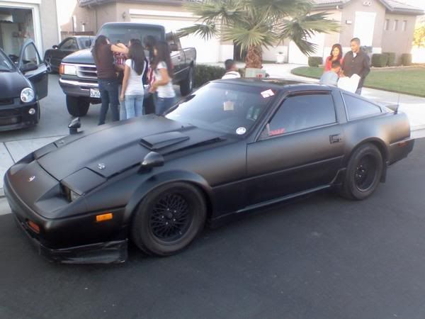

-
Has anyone done this?, only person I know of is xavier, I am actually thinking of doing it on my Z, but I'm not sure yet, just toying with the idea, here is a pic of xavier's Z with them.

but see I would have 84-85 front fenders, 87+ front end conversion, and the 86+ rear fenders and tail lights. Also through in a TBO lip or Kaminari lip, and I might think the Z will look very clean.1uz Swapped, lowered, flaked out '86 z31
'72 Datsun 510 4dr, ka24de-T, slammed resto mod
'84 z31 turbo, coils, wheels a.k.a the gfs weekend car
'86 na2t parts for now a.k.a eventually will get running with a/c daily
'83 280zx project backburner a.k.a ls turbo drag car one day
Custom vg30et tube chassis drift exocet project -
I like that except for the nasty hood gap. -
why?
skinny fenders = skinny wheel = fail.

1988 300zxt. gt35, stance, etc. Wheels: Varrstoen ES2 18x9.5 et-13 225/40. 18x10.5 et0 245/40
1990 jetta vr6'd -
Having mismatched fenders does not look good at all..Bolt on, fast, z31. You can only pick two.
Old weaksauce numbers: 391hp/433tq

-
yea I just thought about that, with the wheels I have the wheels would be sticking way past the fender, cancel this idea then.DeleriousZ wrote: why?
skinny fenders = skinny wheel = fail.
this thread can bw closed1uz Swapped, lowered, flaked out '86 z31
'72 Datsun 510 4dr, ka24de-T, slammed resto mod
'84 z31 turbo, coils, wheels a.k.a the gfs weekend car
'86 na2t parts for now a.k.a eventually will get running with a/c daily
'83 280zx project backburner a.k.a ls turbo drag car one day
Custom vg30et tube chassis drift exocet project -
Why would you not want flared fenders…
IMO any car that has flared fenders always exudes a much more agressive stance and look.
The only 84-85 z31 look i like its the AE, and then from 86 +
I find the z31 just looks too blah without that extra bit of fender in the front and rear.
-
I can't even tell the difference >_ -
Ah I see it now, I kind of prefer the look of the newer fenders but it's a hard call. -
It would be different thats for sure. I say go for it.
I think it's tasteful, if not the greatest combination. Then again, that's what makes this hobby so great. The variety from one car to the next in a single model range.
On a side note, I'm seriously considering a satin/matte paint job considering my budget. Hopefully I can pull it off better than the ricers and pseudo drifters around here.

Copyright © 2006–. All rights reserved. Privacy Policy